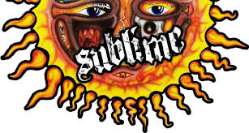

Concert Lineup

On stage at 5 PM
Sublime is a 3-member band formed in 1988, known for starting out in small venues and building a following that eventually led to their debut album 40oz. to Freedom in 1992.

On stage at 7 PM
Arctic Monkeys, formed in 2002, gained early popularity through online demos and quickly became widely recognized for their energetic sound.

On stage at 9 PM
Zach Bryan gained early attention from posting songs online before releasing his first albums and later signing with Warner Records for his major-label debut American Heartbreak.